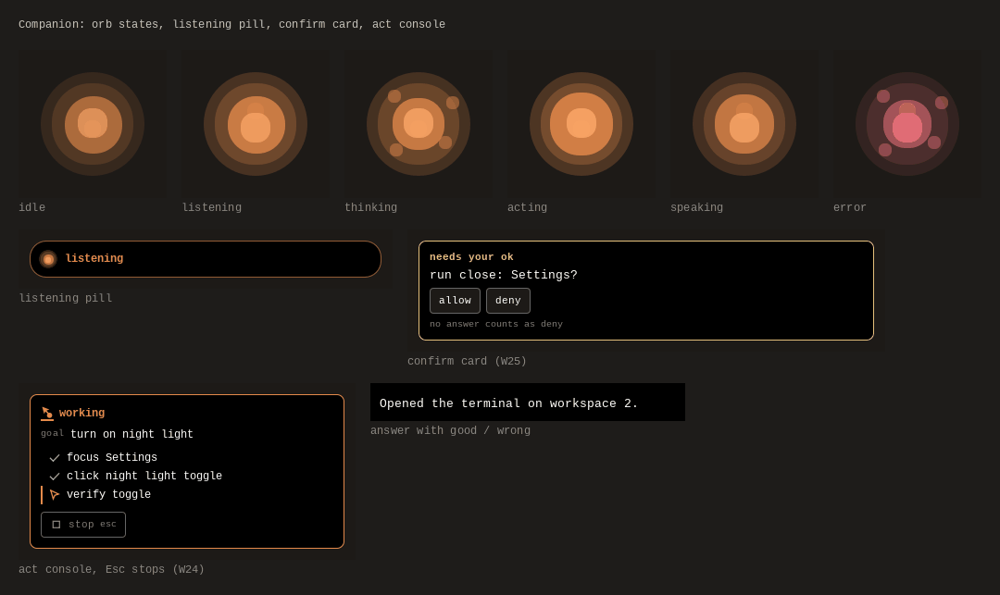

Your voice.
A little
more reach.
Wisp is a voice teacher and doer for Omarchy that points at your screen. Ask a question, find a control, or take the next step.
Install on Omarchy
This is a browser illustration, not a live desktop session. No microphone, accounts, or model calls. It shows behavior, not measured speed.
In this Stripe illustration, read and navigation steps do not need mutation approval. Clicks and typed changes pause for confirmation. Raw live secret keys are refused, not typed.
Less switching.
More doing.
Hold Super + D, speak, then release. Wisp uses screen context to explain what you’re seeing, point out a control, or work through a task.
- Know where you are.
- Personal and work browser profiles give a request its context.
- See what it’s doing.
- The companion has listening, thinking, acting, and confirmation states.
- Keep the sensitive step yours.
- Confirmation gates protect sensitive actions. Review the trust model before enabling execution.
Give your desktop
a little Wisp.
Omarchy / Hyprland is the full-app target.
macOS and Windows support is experimental.
git clone https://github.com/duketopceo/wisp && cd wisp && python3 wispd install
Start with the installation guide. Presets: wispd config preset cloud, wispd config preset local, or wispd config preset safe. These set defaults, not credentials or downloaded models. A local preset alone does not make every data path local.
Early-stage software, with real-desktop evaluation still ahead. Follow the roadmap for readiness gates and current work.